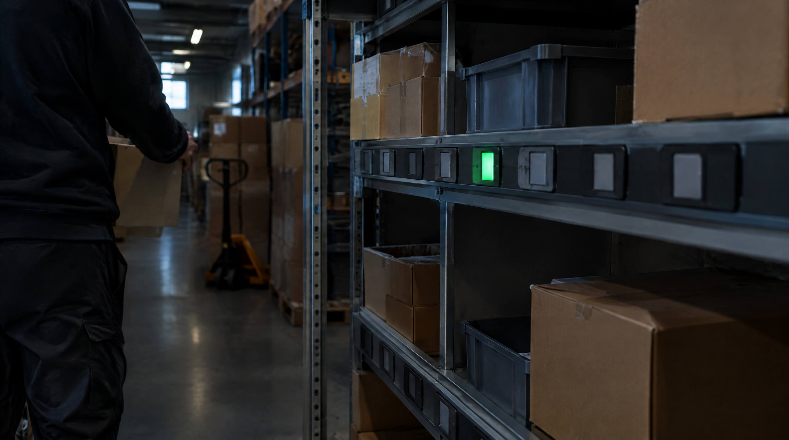

Pick-by-light erstatter papir og scanning med lys. Et LED-display på hylden lyser op og viser antal. Plukker trykker en knap for at bekræft. Ingen scanner, ingen liste. Præcis og hurtig.
Det er ikke teknologi for teknologiens skyld. Pick-by-light løser et konkret problem: den korteste onboarding-tid og den laveste fejlrate i hojtvolumen pluk. Men det passer ikke til alle lager-typer. Her er alt du skal vide.
Hvad er pick-by-light?
Pick-by-light er et hylde-baseret plukkesystem, hvor en LED-display på reolen viser:
- Hvilken lokation der skal plukkes (lokationen lyser)
- Antal enheder der skal plukkes
- Bekræftelse ved knaptryk
Plukker bevæger sig til det lysende display, tager det viste antal, og trykker bekræft. WMS registrerer plukning automatisk.
Sammenligning: papir vs. scanning vs. pick-by-light
👉 SmartPack kan integreres med pick-by-light hardware via standardprotokoller. Få en demo
| Parameter | Papir | Scanning | Pick-by-light |
|---|---|---|---|
| Picks/time | 55-70 | 85-102 | 90-110+ |
| Fejlrate | 2-3% | 0,5-1% | 0,2-0,5% |
| Hænder frie | Delvist | Nej | Ja |
| Investering | Ingen | Lav | Medium-hoj |
| Onboarding | Lang | Medium | Meget kort |
Pick-by-light har den korteste onboarding-tid. Nye medarbejdere er produktive på 30-60 minutter, fordi systemet er visuelt og intuitivt.
Hvornår er pick-by-light optimalt?
Godt fit for:
- Hoj volumen, hurtig roterende sortiment (A-zone)
- Pakkestationer med mange varer at vælge imellem (kit-assembly)
- Virksomheder med hoj medarbejderomsætning (kort onboarding er afgørengle)
- Miljøer med høj støj (lys fungerer bedre end lyd)
Dårligere fit for:
- Lavvolumen (investering ikke rentabel under 150-200 ordrer/dag)
- Store lager med mange gang-meter (lysinstallation er dyr)
- Meget variabelt sortiment (lys-opsætning skal justeres hyppigt)
Investering
| Komponent | Pris |
|---|---|
| Pick-by-light enheder (per lokation) | 300-800 kr. |
| Controller-enhed | 5.000-20.000 kr. |
| WMS-integration | 20.000-80.000 kr. |
| Installation | 15.000-40.000 kr. |
For 100 lokationer: 85.000-200.000 kr. samlet. Break-even ved 200+ ordrer/dag: 6-18 måneder.
Typiske fejl
- Installerer pick-by-light på hele lageret: Start med A-zone (20% af SKUer, 80% af ordrer). Det er her gevinsten er.
- Glemmer WMS-integration: Pick-by-light uden WMS-forbindelse er bare fancy lys. Det er integrationen der giver dynamisk styring.
- Undervurderer vedligehold: LED-displays kræver udskiftning. Budget 10-15% af hardware-investering per år.
Sådan gør du det rigtigt
- Start med A-zone: Implementer pick-by-light på de 20% af lokationer der dækker 80% af pluk-aktivitet.
- Kombiner med pakke-station: Pick-by-light ved pakkestationen (put-to-light) reducerer sorterings-fejl markant.
- Definer klare bekreftelsessignaler: Bekræftelsesknap skal være nem at trykke med een finger mens man holder varen.
SmartPack
SmartPack kan integreres med pick-by-light hardware via standardprotokoller. WMS styrer, hvilke lokationer der lyser, og modtager bekræftelse automatisk. Det giver samme fejlrate-reduktion som scanning, men med kortere onboarding og bedre ergonomi.